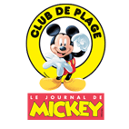

Club Mickey Cabourg
Refonte du site internet et optimisation du référencement.
Refonte du site internet et optimisation du référencement.
Réalisation d'un site e-commerce avec la solution wordpress et woocommerce.
Création d'une identité visuelle et d'un site internet sur wordpress
Création d'un site wordpress
Site wordpress et des modules d'inscription en ligne, ainsi qu'un module e-learning.
Création de maquettes web après études UX
Ma polyvalence me permet de vous orienter vers la solution la mieux adapter à votre projet. Que vous ayez besoin d'un site from scratch ou un wordpress avec une solution e-commerce woocommerce, ma priorité reste de me synchroniser au mieux avec votre besoin.
Minimaliste ou Design identitaire, le plus important reste toujours le message à faire passer. Découvrez comment transmettre les émotions de votre marque ou de votre entreprise de la meilleure des façons : En pensant à vos utilisateurs.
Le cadrage d'un projet digital est probablement l'étape la plus importante. Avec vous, nous penserons le projet dans sa globalité, de façon stratégique et en établissent le cahier des charges fonctionnel et technique.
Votre entreprise est unique, ne pensez-vous pas que votre site doit l'être aussi ? Je vous propose de travailler autour d'un webdesign percutant, répondant à vos objectifs et offrant une meilleure expérience à vos utilisateurs !
On peut réaliser un site unique et simple d'utilisation. Je réalise l'intégration de vos webdesign sur une solution Wordpress pour vous permettre de contrôler votre site après la livraison. Vous restez maître de vos contenus.
Votre outil est prêt. Il ne reste plus qu'à le livrer.
Pour que cette étape se passe dans le confort le plus total, cette livraison s'accompagne d'une formation à l'utilisation de la solution. Avec des tips pour vous aider à continuer votre optimisation SEO.
On a plus qu'à se téléphoner et discuter de la réalisation de votre merveilleux projet
Le digital m'a toujours attiré. Depuis mon plus jeune âge, je me passionne pour l'outil informatique que ce soit dans la réalisation vidéo ou le développement web. J'ai fais mes armes sur les logiciels adobes, et j'aime en apprendre toujours plus.
Voir ce que je fais en vidéoAprès avoir travaillé pour des grands groupes au sein de leur service communication stratégique, j'ai eu de me développer au delà du logiciel PowerPoint. J'ai suivi une licence de Concepteur Designer Graphique à l'école ARIES, puis une master en ingenierie communication et stratégie digitale à l'école Digital Campus.
J'y ai découvert bien plus que des nouvelles compétences dans le digital. J'ai développé un véritable goût à la création et l'accompagnement de projet innovant et j'ai pris la décision moi-même de lancer une startup : Trouve ton mojo.
Originaire de la ville de Caen, je me suis installé à Lyon pour suivre mes études.
Voir où se trouve Caen sur une carte